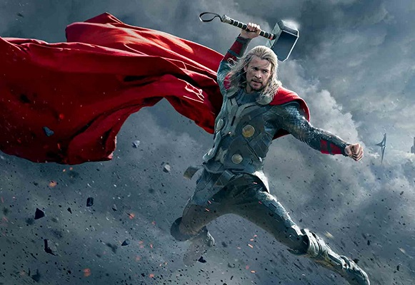

Тор
Тор (англ. Thor) — супергерой коміксів видавництва Marvel Comics. Персонаж створений на образі однойменного бога з
германо-скандинавської міфології. Його творці в Marvel — редактор Стен Лі, сценарист Ларрі Лібер і художник Джек
Кірбі, перша згадка про нього — в коміксі Journey into Mystery #83 (1962), який пізніше перейменували на «The Mighty
Thor».

Сили та здібності
- Політ: Тор має сили літати, навіть без Мйольніру, він неодноразово доводив це, навіть в молодості, до того, як
удостоївся честі володіти молотом.
- Вміння викликати блискавку: Тор — бог грому і блискавки і його основна сила керувати блискавкою.
- Витривалість: Тор має божественну витривалість, його тіло здатне витримувати сильні удари й атаки, є одним з
найбільш витривалих асґардійців.
- Сила: Тор, навіть без молота є найсильнішим серед асґардійців суто у фізичному плані, його м'язи за своєю
щільності перевершують всі асґардійскі показники. Його сил досить щоб підняти мідгарского змія, який був
настільки величезний, що двічі обкрутив Землю. Крім цього, Тор в стані рухати острова, кришити Уру, рвати канат
з Адамант, і навіть знищити планету. З Мйольніром, сила Тора збільшується до невідомих меж.
- Мйольнір: Одін нагородив свого сина неймовірним артефактом, який без сумніву є однією з наймогутніших зброй.
Викуваний у Нідавеллірі. Молот дарує Одінсону неймовірні можливості та збільшує базові сили. Молот має особливі
властивості, його може підняти лише гідний індивід, помисли і серце якого буде переповнювати честь, а рухати
яким будуть лише шляхетні й благі спонукання. Крім цього молот здатний повертатися в руки до свого господаря, не
залежно, від відстані та перешкод.
- Маніпуляція погодою: Мйольнір багаторазово посилив вміння Тора з контролю погоди, з ним він здатний створювати
будь-які погодні явища: гігантські торнадо, смертоносні заметілі, метеоритні дощі й зливи, більш того Тор
здатний створювати навіть космічні бурі та шторми планетарних масштабів, активність яких загрожує цілісності
планет. Він може створити погодне явище навіть в місцях, в яких воно теоретично не може бути створено,
наприклад, створити дощ в печері або підводну бурю.